The yard · in memory
Practice, never saved
- A neglected grave: “I’ll start the gym on Monday”
- Time frozen, no random visitors, no rank fanfare
- Burial switched off: the first real goodbye happens at home
Bury a phone that died, a houseplant you couldn’t save, the gym you were starting on Monday. Then tend the graves, meet who wanders by at night, and build the cemetery around them. A low-poly 3D world built on psychological research into how we let go of things, and why small rituals help.
My role Independent designer and developer: concept, game and UX design, and the build, with AI agents working under my review.
The models are the game’s own, rebuilt from Production. Drag to look around.
A loop with no rush in it. Neglect costs something, but a player who disappears for a month comes back to weeds, not ruins.
Every grave gets a name, a cause of death, an epitaph, a photo and one of 10 headstones.
Weeds grow, flowers wilt after 3 days, and a grave left alone for 10 days breaks.
Presences wander in: ghosts, zombies, the priest, the gravedigger, pets with a bond of their own.
Wisps buy lights, paths, crypts and stranger things, placed and edited cell by cell.
A new player has ten real gestures to learn before their first burial. An interface tour explained them; it was replaced by the Keeper’s yard, a small fenced practice ground where each step is completed only by doing the real action.
The yard · in memory
Your cemetery · the real save
Gamification designed to pull a new player in straight away. The first rewards come fast and feel big; every rank after takes longer. The first rank arrives in about two minutes, the last in about two and a half months, with no daily pressure in between.
Goal-gradient effect
People speed up as a goal gets close. A first rank that is two minutes away gives the very first session a pull, and every burial visibly moves the bar.
Peak–end rule
An experience is remembered mostly by its high points and how it ends. The funeral, the headstone appearing, the first achievement and the rank-up are designed as those moments, so the session ends on one.
Rewards that protect meaning
Exhuming a grave within 24 hours gives the reward back, and pet gifts are capped per visit. The fastest way to progress stays the intended one: caring for the cemetery.
By default the game follows the device clock, four seasons and four kinds of weather, so the cemetery feels like part of the day. But it is the player’s place: in Settings they can fix it to day, evening or night, whichever makes it feel safest and most their own.
Lanterns, candles and crypt windows don’t use real-time point lights. Each source is painted into a top-down light map that the materials read, redrawn at most 24 times a second. Real lights were tried on high quality and dropped: their colour shifted as the camera moved.
The rules were tested before any art existed, and the look changed three times while the rules stayed the same. Every stage is rebuilt from the project’s history and captured at phone size.
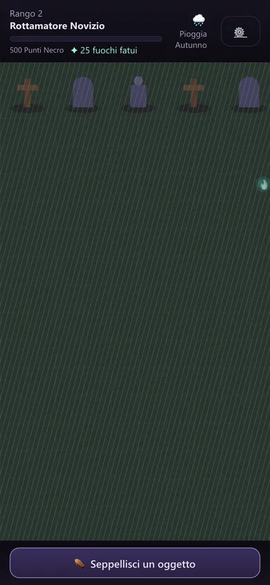
01 · June 2026
A React prototype with flat placeholders, to test the burial ritual, the economy, care and decay, and how long a session and the loop take.
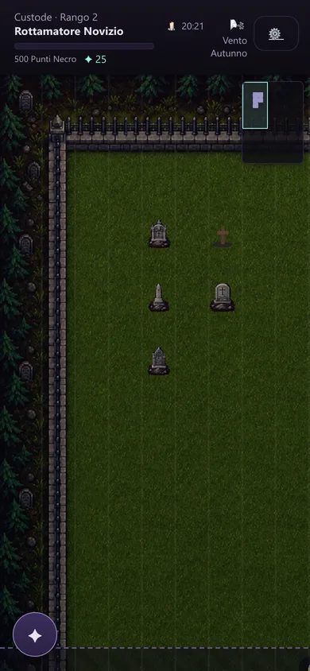
02 · July 2026
The same prototype dressed in AI-generated pixel art, swapped in asset by asset. It introduced dragging a grave into place.
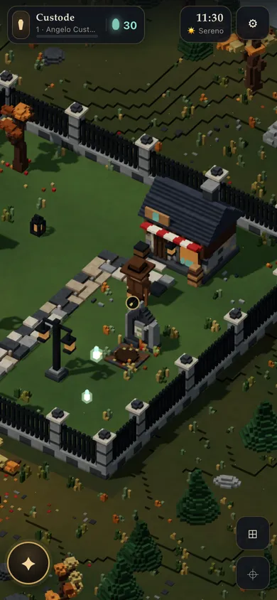
03 · October 2026
A new Three.js game with the same rules: a walking keeper, real day and night, all geometry generated in code, checked on phones.
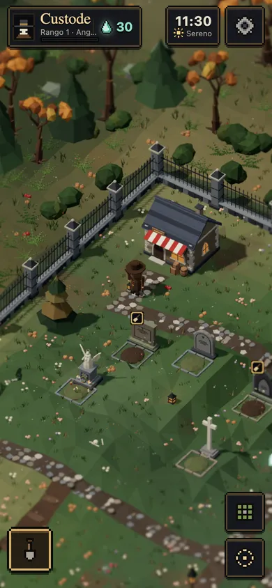
04 · October 2026
Three styles compared on the same data: voxel, low-poly and miniature. Low-poly won; the others were removed a week later.
05 · November 2026
Production: the practice yard, the shop, customisation and ten languages, now in private beta.
No textures, no imported models. Every object in the world is generated in code from low-poly geometry and vertex colours, drawn from one shared palette. That keeps the world coherent, small to ship and cheap to change.
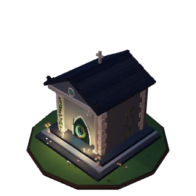
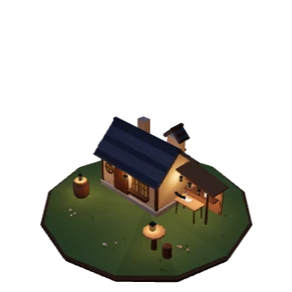
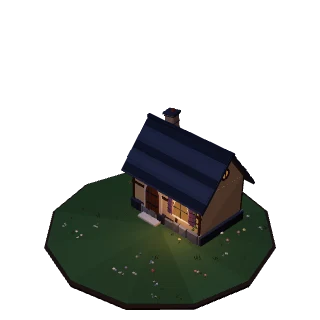
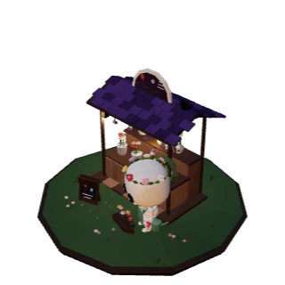
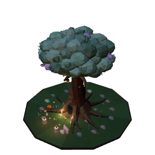
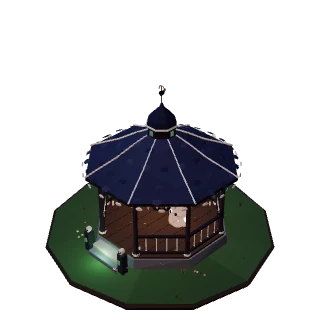
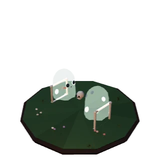
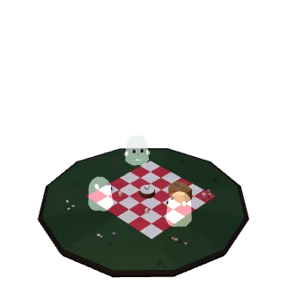
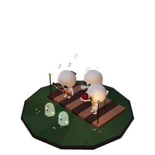
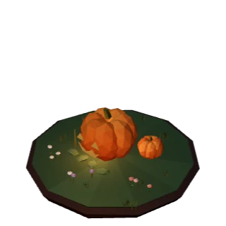
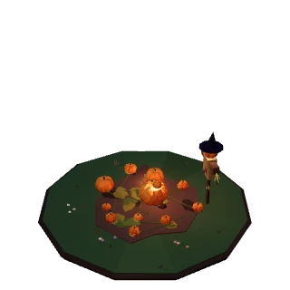
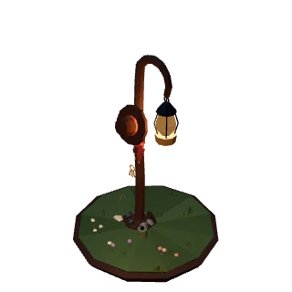
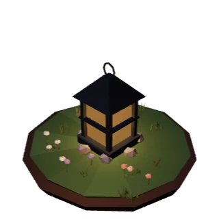
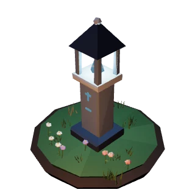
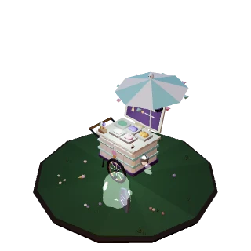
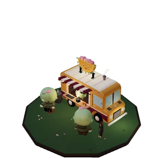
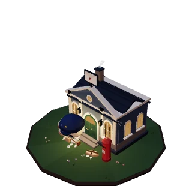
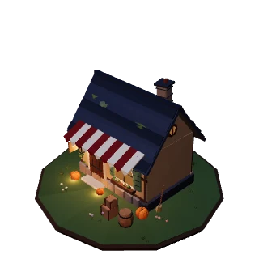
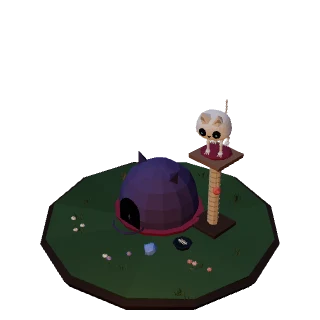
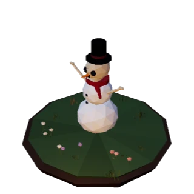
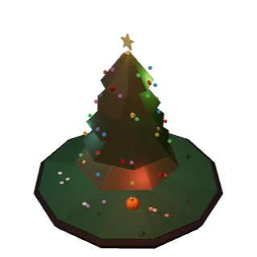
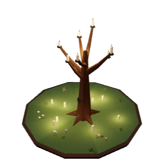
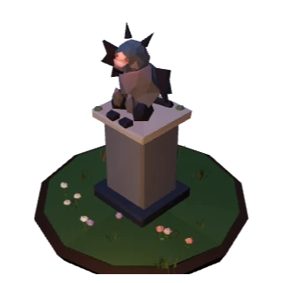
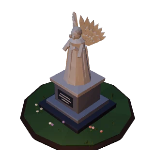
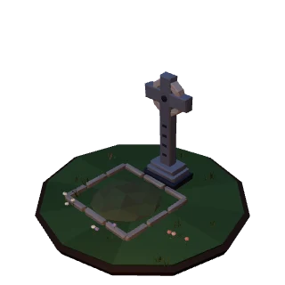
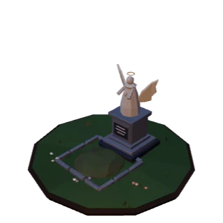
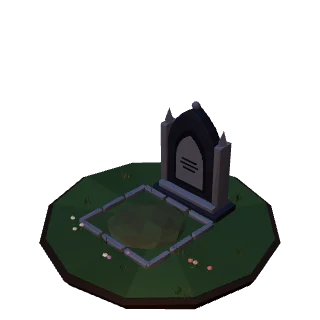
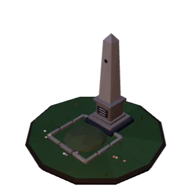
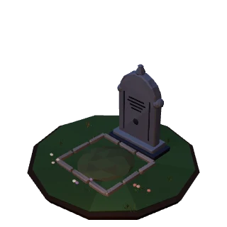
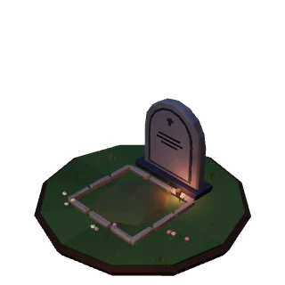
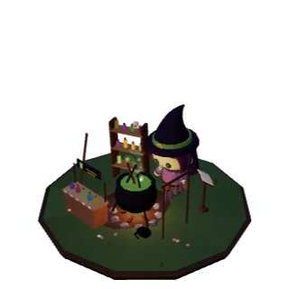
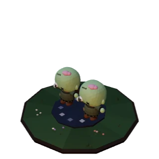
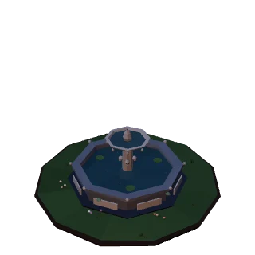
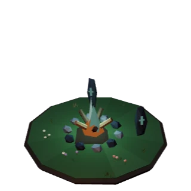
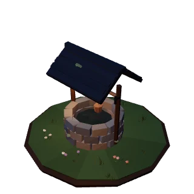
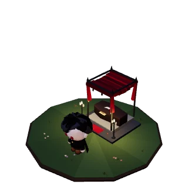
The game measures itself on first launch and picks a quality profile, then only steps down after six slow windows in a row, so one hiccup doesn’t make the world uglier.
Simplified world, Lambert materials, no shadows
Lambert materials, static shadows, 2× MSAA
PBR materials, live shadows, 2× MSAA
Idle: 30 fps after 10 seconds without input, 10 fps behind menus, 5 fps when the app loses focus.
From a tester’s Galaxy: start at the top of the estimated tier and lower resolution only under real load; cache geometry on the device; prepare the cemetery and tutorial before the first entry.
Not measured yet: frame rate, memory and load time on physical devices. The numbers above are budgets, not results.
Every object in Necrothing is code, which is great for an agent and hard for a designer to touch. So I built a round trip: from code to a model I can open in Blender, and back to code the game can load.
The asset atlas rebuilds every object in the game from Production’s own three.js generators: 249 entries, with their states, variants and lights.
One click exports a GLB in its reference pose, with names, pivots, material buckets and real point lights preserved.
Agents drive Blender through a local bridge to analyse, clean or optimise the model; I review it in the viewport.
The edited GLB goes back into the atlas, which compares triangles, dimensions and lights with the original before anything moves.
The atlas exports a self-contained three.js module, so the approved model returns to the game as code.
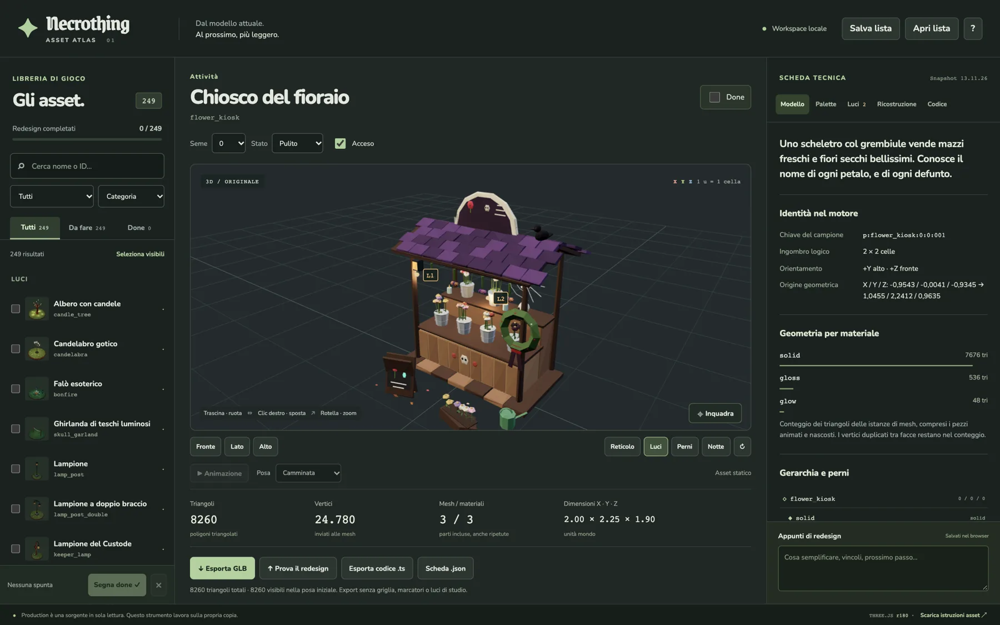
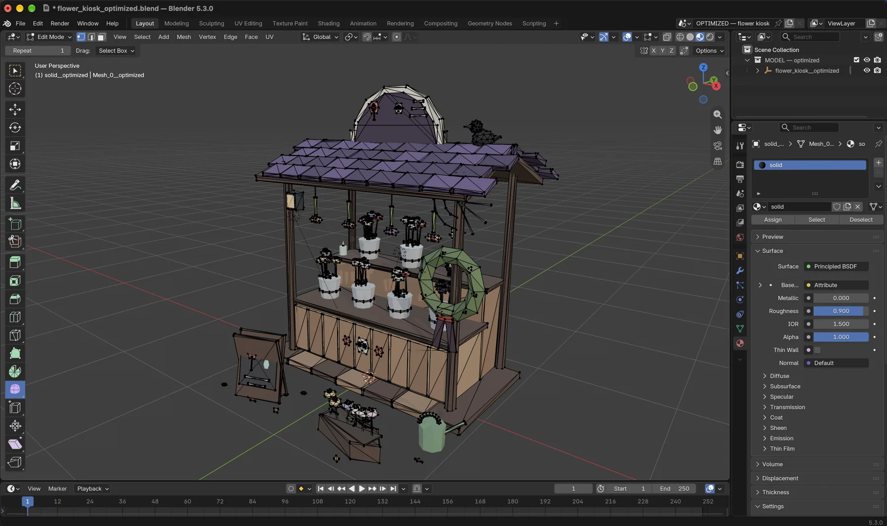
8,260 7,628 triangles
7.7% lighter, and you shouldn’t be able to see it. It started from one manual editing pass in Blender, which the agents then turned into a repeatable script. The clean-up only removed triangles sealed inside other closed parts; no surface was simplified. Ten rendered views compared before and after showed no change in colour or normals.
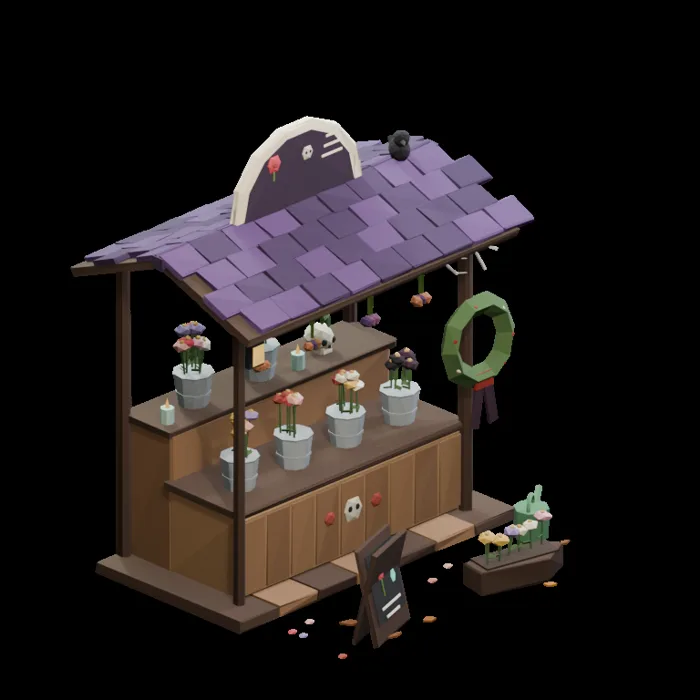
Start from the most similar existing asset. Use only palette colours; if one is missing, ask me first. Complete every step of the recipe and pass the tests. Then send me the preview, and the object in the scene at night and by day, in high and low quality.
25 players and more than 150 play sessions so far, with the whole game and no purchases.
A free demo with up to five personal graves, and the full game as a one-time purchase.
Shadowing and a short survey with beta players on the first session and the yard. Findings are still to come.
The player journey, the information architecture and every main screen of the game at phone size.
The first session, and what brings a player back. Screens are captured from the game.
01Arrive
02Practise in the yard
03Receive the cemetery
04First goodbye
05Lay it to rest
06Come back
07Make it yours
On screen
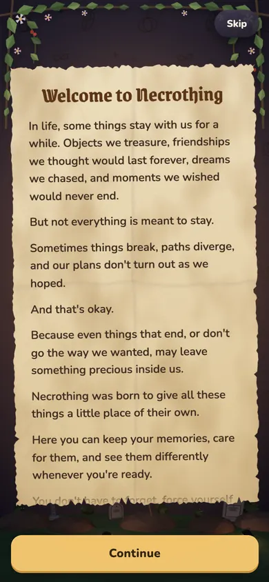
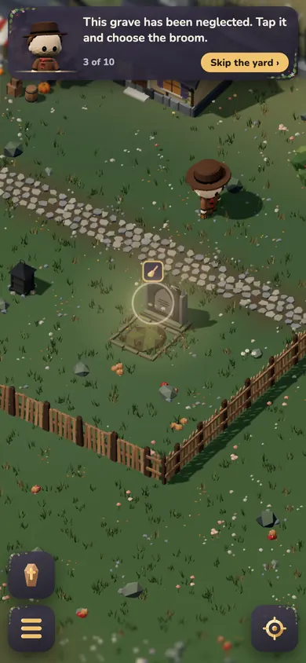
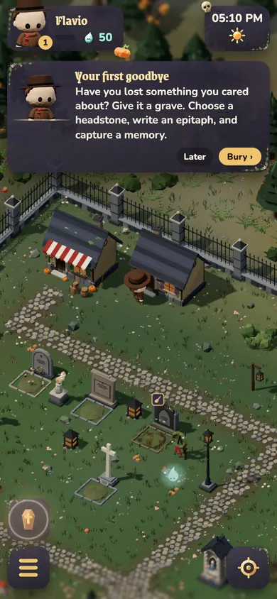
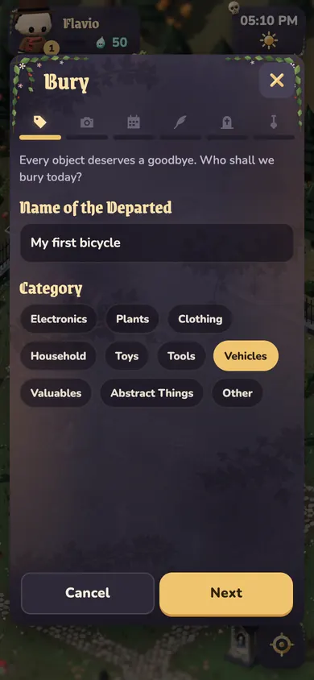
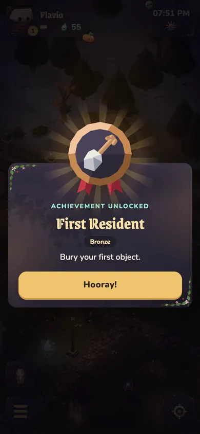
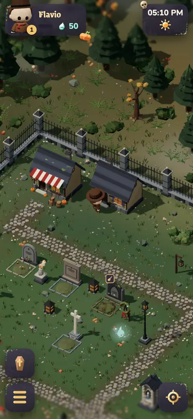
Player does
Game responds
Design intent
42 screens and panels across seven areas. The action bubble and tapping an object are the two hubs; most of the game is one tap from the cemetery. Hover a node to see its connections and its screen.
Screen or panelStep-by-step flowFlow inside an areaShortcut across areas
Arrival
Cemetery
Burial
Graves
Building
Memories
Profile & settings
SplashEnter, or load a backupWelcome letterName the keeperIntro4 cards: wisps, care, visitors, memoriesKeeper’s yard10 steps, never savedReady?Gift: lantern + 20 wispsCemeteryHUD: player, wisps, clockAction bubbleBury · Edit · Inventory · Shop · Photo · Gallery · Settings36 screens from the real game at phone size, connected as a player moves through them. Hover to preview, select to open full size, or use a name to find it in the architecture.
Arrival and the yard
Cemetery and burial
Graves and building
Memories, profile and settings